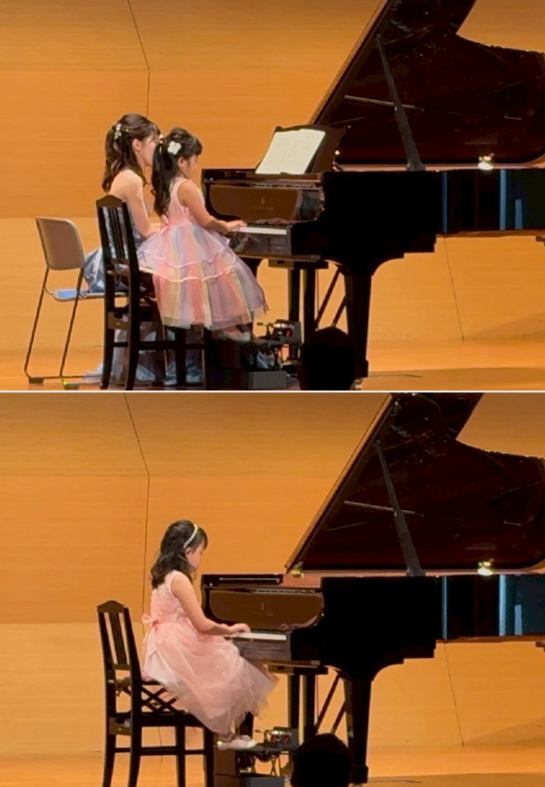
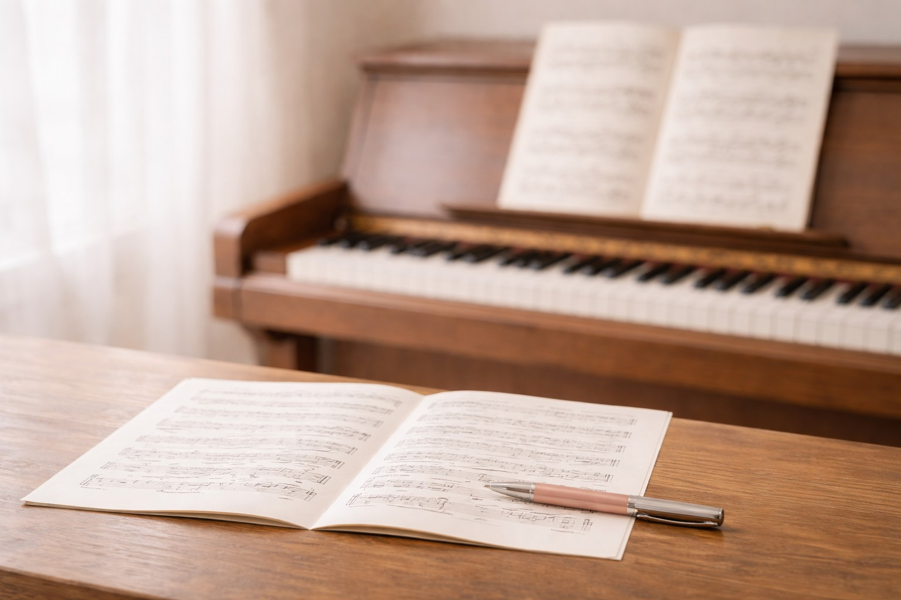
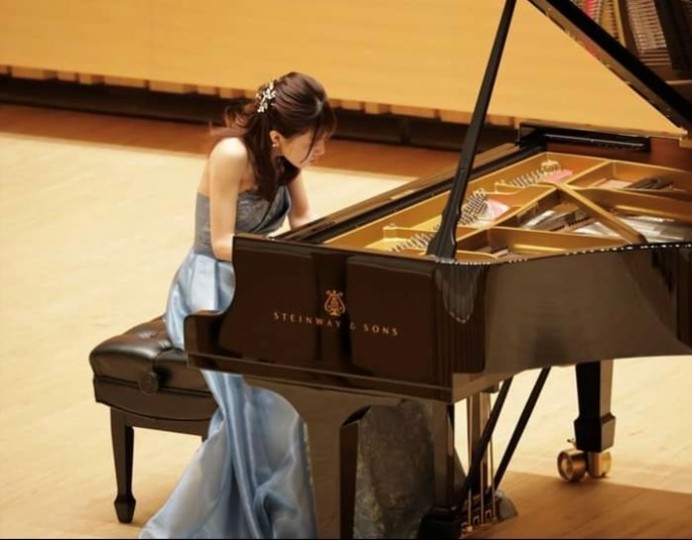

石原菜々子
ピアノ教室
高崎市片岡町｜完全個人レッスン。
体験レッスン無料。お子さまから大人の方まで、目的に合わせて丁寧に。
基礎〜／趣味／学校の伴奏／資格取得／音大受験／コンクールまで幅広く対応します。
当教室は、完全個人レッスンのピアノ教室です。
「弾ける楽しさ」を大切にしながら、演奏の基礎技術や表現力、音楽の知識を丁寧に身につけていきます。
ご年齢や目的に合わせて、無理なく続けられるペースでそれぞれが成長を実感出来るような指導を心がけています。
お一人おひとりの目標や状況に合わせて、使う教材や内容を調整します。
基礎〜上級まで
姿勢／手の形／読譜力／表現力を基礎からしっかりと楽しく学びます。
趣味（子ども・大人）
弾きたい曲を楽しみながら、ピアノの基礎知識も取り入れたレッスン。
学校の伴奏（合唱コンクールなど）
限られた期間で曲を仕上げる練習計画と安定した演奏づくりをサポートします。
音大受験・コンクール・資格取得
音大受験、コンクール、保育士免許対策など目的に合わせてより専門的にレッスン致します。
定期的な発表会（任意）
日頃の成果を披露する場として、定期的に発表会を開催しています。参加は任意です。

体験レッスン：無料
通常レッスン（30分／月4回）
子ども：6,500円
大人：7,000円
入会金不要
※ 教材費・発表会費別途
※ 上記以外のレッスン時間や回数につきましても、お気軽にご相談ください。
まずは、経験・目標・ご希望の時間帯を添えてご連絡ください。

上達の土台は「基礎」と「継続」です。
毎回のレッスンで「次に何を練習すれば良いか」が分かるよう、丁寧に道筋をつくります。
姿勢・手の形・読譜・表現力。土台を崩さずしっかりと積み上げます。
音楽大学受験・コンクールなどより専門的に学びたい方大歓迎です！自分自身の経験も活かしながらサポートします。
日頃の練習の成果を披露できる場として、定期的に発表会を開催しています。
人前で演奏することによって自信や達成感が得られ、新たな成長に向けてとても良い機会になります。
集中力に合わせて、楽しく無理なく続く進め方を大切にします。
弾きたい曲を楽しみながら、初心者の方でも基礎から丁寧に学べます。
料金・日程は応相談ですが、出来る限りご対応致しますのでお気軽にご相談下さい。
石原 菜々子
令和6年、武蔵野音楽大学ピアノ科卒業。ヤマハ指導グレード5級取得。
生徒さんとのコミュニケーションを大切にし、安心して通える教室づくりを心がけています。
初めての方、目標に向けて頑張りたい方、大歓迎です！
それぞれのご要望に合わせてレッスンを行います。
私自身も毎週レッスンに通い、日々自己研鑽に励んでいます。演奏する立場としても常に新しい知識を取り入れながら、生徒さんに「弾けた時の達成感」と「音楽の楽しさ」を感じてもらえるよう、丁寧にサポートいたします。

体験レッスン（無料）のお申し込み・ご相談は、メールまたは電話でご連絡ください。
高崎市片岡町2丁目（詳細はご予約時にご案内します）
【営業時間】10:00～20:00（不定休）
状況に応じて、時間外のご相談も承ります。